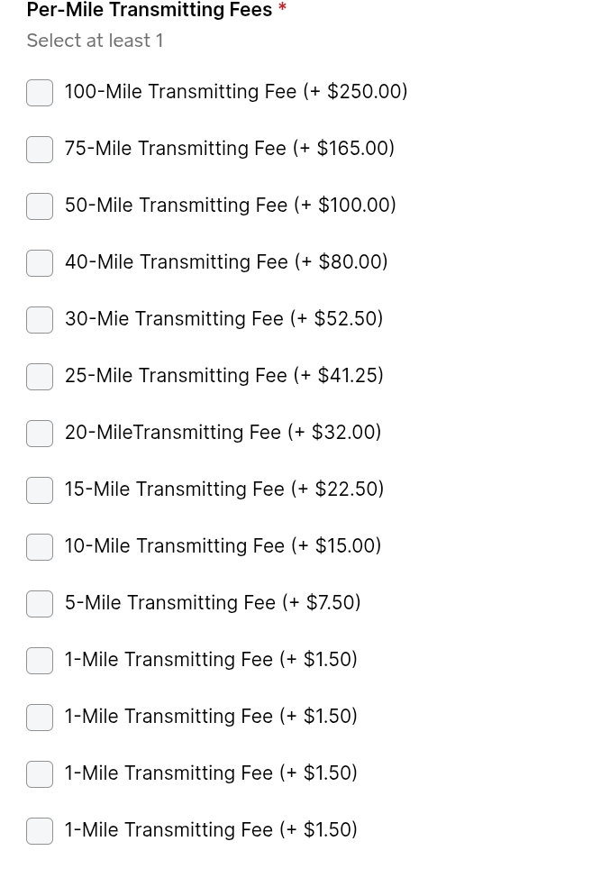
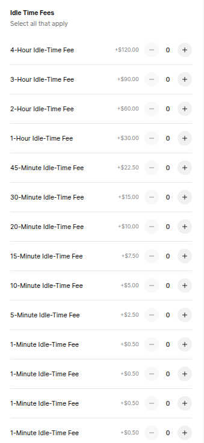
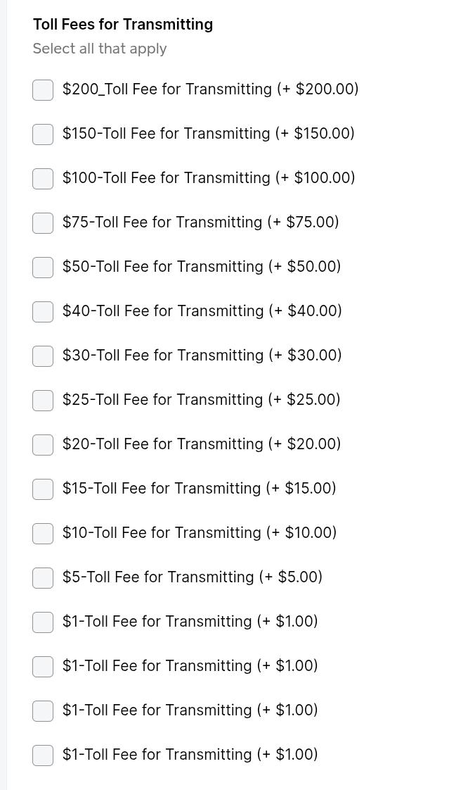
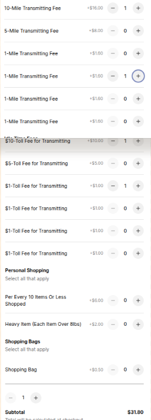
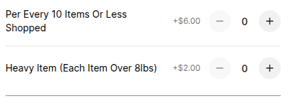

Private, Surge-Pricing Free Transmitting from and for Central New Jersey--to Wherever ***Now, With Personal Shopping***
Don't deliver, don't ridshare, don't taxi--TRANSMIT! You choose the route. You keep your privacy. We handle the transmitting — fairly, clearly, and without surprise fees. Now offering personal shopping to compliment any transmitting.
- No tracking apps, no data harvesting, no surge pricing.
- Transparent per-mile, idle-time, and toll-fee structure.
- Co-op business model: All of our transmitters are highly vetted local persons who are owner/operators of the company itself; and consequently keep 87.5% of each route, plus 100% of tips.
- Personal shopping priced up front, per every 10 items, added to the trasmitting charge.
- As a locally owned co‑op, our pricing is consistently lower than major corporate platforms such as Uber, Lyft, DoorDash, and Instacart — all of which use dynamic or surge‑based pricing models. AA Transmitting never uses surge pricing, hidden fees, or data‑driven price manipulation.
All transmitting payments are processed securely through Square. Our transmitters never carry cash. You simply match your distance, idle-time, and toll fees on the Square Buy Page--then you'll receive a confirmation text or email telling you your transmitter's expected arrival time.

AA Transmitting primarily serves Central New Jersey and surrounding areas. Transmitting availability may vary based on time, distance, and route.
Service Area and How It Works
AA Transmitting is a privacy-focused transmitting co-op based in New Jersey--meaning it is owned and operated solely by its highly-vetted employees. You provide the directions using your own navigation app, we calculate the transmitting based on your route, and you pay securely online through Square.
Our service area centers on New Jersey and nearby regions. Availability depends on distance, time, and route conditions.

If you are unsure whether your transmitting is within range, text your directions screenshot to 732-633-0200 and we will confirm availability.
How Pricing Works
Every transmitting begins with a simple $3.20 pick-up fee, plus variable mileage rates that are demonstrated in the examples below and outlined precisely on the secure Square payment page.
AA Transmitting uses a simple, transparent structure based on three components: distance, idle-time, and toll fees. There are no surge prices, no hidden fees, and no tracking apps required.
1. Per-Mile Transmitting Fees
Distance is calculated using your chosen route in your navigation app. The total distance is always rounded up to the next whole mile. You then select the combination of per-mile options on the Square Buy Page that matches your total distance.

For example, if your route is 30 miles, you would select the “30-Mile Transmitting Fee” option. If your route is 33 miles, you might select a 30-mile option plus three 1-mile options.
2. Idle-Time Fees
Idle-time is charged when you request the transmitter to wait during the transmitting, or when traffic adds more than 10 minutes to the estimated time. After the first 10 minutes, idle-time is charged at $0.50 per minute, using the idle-time options on the Square Buy Page.

You only select idle-time options if you request waiting or if a delay clearly extends beyond the original estimate. This keeps your pricing fair and transparent.
3. Toll Fee Pricing
Toll fees are calculated using your own navigation or directions app (Google Maps, Apple Maps, Waze, HereWeGo, etc.). The toll amount is based on:

- The address the item is being transmitted from (Address A)
- The address the item is being transmitted to (Address B)
- The specific route you choose
Whatever toll amount your app shows for your chosen route is simply round it up to the next even dollar and add that to your transmitting total.
Example: If your chosen route shows a $1.67 toll, the toll fee for your transmitting is rounded up to $2.00. On the Square Buy Page, you would select the toll fee boxes that add up to $2.00.
How to Send Transmitting Directions
To begin a transmitting, simply use your preferred navigation or directions app (Google Maps, Apple Maps, Waze, HereWeGo, etc.) and enter:
- The address the item is being transmitted from (Address A)
- The address the item is being transmitted to (Address B)
Your screenshot must clearly show:
- Distance of the route
- Estimated time of the route
- Your chosen route highlighted
- Any toll fees listed for that route

This example shows a 3.5-mile route with an estimated time of 10 minutes and no tolls. Because distance is rounded up, this becomes a 4-mile transmitting.

This example shows a 30-mile route with an estimated time of 34 minutes and a $1.67 toll. The toll is rounded up to $2.00 for transmitting purposes.
Once your screenshot is ready, send it to us by either:
- Text: 732-633-0200
- Email: AATRANSMITTING@AOL.COM
You will receive a confirmation message once we’ve received your directions. After that, you can complete your payment through Square using the link or QR code. If for whatever reason(s) our automated system doesn't work for you, feel free to call or email and our professional, courteous local personnel will be happy to either walk you through the automated process, or, take your otder for our service(s) manually--however you prefer.
How to Pay for Your Transmitting
Once you’ve sent us your transmitting directions and received confirmation, you can securely pay for your transmitting through Square. Payment is simple: just check the boxes that match your distance, idle-time, and toll fees, plus the $3.20 pick-up fee.
Open the Secure Square Pay Page
You can access the payment page in any of the following ways:
- Click the “Pay via Square” button in the sticky header
- Scan the QR code below with your phone
- Or go directly to: https://square.link/u/zN6dTcJ3
Match Your Distance, Idle-Time, and Tolls
On the Square Buy Page, simply check the combination of boxes that add up to your total distance (rounded up), any idle-time, and your toll fees (rounded up to the next even dollar).
Pay via Square
This example shows how per-mile transmitting fees and toll fees can be combined. You select only the boxes that apply to your transmitting.
Once your payment is complete, you will receive an estimated arrival time through the same method you used to send your directions (text or email). Our transmitters never carry cash — all payments are processed securely online.
Examples — Putting It All Together
These examples show how to read your transmitting directions, how to calculate distance, idle-time, and toll fees, and how to check the correct boxes on the Square Buy Page.
This route is 3.5 miles with no significant delays and no tolls. Because distance must always be rounded up to the next whole mile, this becomes a 4-mile transmitting.
On the Square Buy Page, you would check:
- Four “1-Mile Transmitting Fee” boxes
- No idle-time boxes
- No toll boxes
This route is 30 miles, estimated at 34 minutes, with a $1.67 toll. The toll is rounded up to $2.00.
On the Square Buy Page, you would check:
- One “30-Mile Transmitting Fee” box
- No idle-time boxes (no significant delay)
- Two “$1 Toll Fee” boxes
Idle-time is charged when:
- You request the transmitter to wait during the transmitting
- A traffic delay adds more than 10 minutes to the estimated time
After the 10-minute mark, idle-time is charged at $0.50 per minute, using the idle-time options on the Square Buy Page.
If your route contains only toll fees (no distance beyond the base mile and no idle-time), simply check the toll boxes that match the rounded-up toll amount.
Any transmitting can be paid for by combining:
- Distance (rounded up)
- Idle-time (if any)
- Toll fees (rounded up to the next even dollar)
This ensures you never need an app tracking you or gathering your data. You maintain full privacy while still receiving accurate, upfront pricing.
Personal Shopping Services
AA Transmitting now offers Personal Shopping for customers who need items purchased and delivered quickly, privately, and without the tracking or data collection used by major delivery apps--and also appreciate the personal service only a local business can provide.
You simply tell us what you need, where to buy it, and where it’s going. We handle the rest — purchasing and transmitting of your items with the same privacy-first, surge-free structure used for all of our services.
How Personal Shopping Works
- Purchase the personally shopped items' transmitting from your store of choice to your desired item-transmitting destination through our Square payment portal, adding the appropriate charge(s) for the number and type of items you need personally shopped--check the box per every 10 items you would like shopped (example=8 items is one checked box, 13 items would be two checked boxes (always roung up to the next whole 10)), plus check the box for all items heavier than 8lbs (heavy items)--gallons of milk or water or juice are NOT "heavy", but anything heavier are--24-packs of bottled water, 1-gallon liquid laundry detergent, 10lb bags of pet food, etc., plus check the box for the number of bags, if any, needed to carry your items (a $3.20 transmitting pick up fee is automatically applied to all services).
- You then send us the item list and transmitting navigation screenshot, with toll fees, where applicable, via email or text, along with instructions as to how to leave the items at your desired destination
- We confirm availability and derive each item's price from its store's website (never any dynamic pricing--you pay ONLY what the store charges), as well as calculate and apply all applicable taxes (we gladly reuse bags where applicable--repeat, regular customers)
- An invoice, secured by Square, with your items' complete store total will be sent to you via text and/or email
- Once that invoice is paid, a Transmitter will be dispatched to procure your items (said Transmitter will be provided your preferred means of communication (text or email) in order for them to facilitate any item-replacements, should an item be unavailable) (Being an employee-owned and -operate co-op, in addition to our extremely rigorous vetting standards, we also distribute "work phones" to all of our Transmitters...Work phones that are monitored and audited quaterly to ensure they are ONLY used for this business's purposes, and, that completely reset every shift--none of your shopping or transmitting information is ever capable of being compromised)
- Once your Transmitter has completed shopping your items, they will immediately transmit them to your desired destination, and leave them as you instructed--WITH YOUR RECEIPT (if there is ever any discrepency between what you paid on your initial item invoice and what your receipt says, whether that be because of item unavailability or an item replacement, or even an item on sale, you will receive an immediate and full refund for that difference--however, if such a discrepency for any of those reasons results in a receipt higher than your initial item invoice, your payment method will be charged for that difference).
- If you wish not to utilze any of our automated platform, for whatever reason(s), please feel free to call or email us your Transmitting and/or Shopping Service requirements--and our professional, courteous, local personnel will be more than happy to either walk you through the automated process (so you know for the future) or take your order manually--however you prefer.
Personal Shopping is ideal for groceries, pharmacy items, last‑minute essentials, forgotten items, and private purchases you prefer not to make through tracking-based apps.

Price Comparison — AA Transmitting vs. Corporate Platforms & Local Taxis
As a locally owned co‑op, AA Transmitting offers upfront, surge‑less pricing that is consistently lower than major corporate platforms such as Uber, Lyft, DoorDash, and Instacart — and lower than the average per‑mile rates charged by local taxi companies. Unlike these services, AA Transmitting never uses surge pricing, dynamic pricing, or hidden fees, and also considers how its workers are affected by the pricing and work itself-- a facet of business operations all to often overlooked.
How Corporate Platforms Price Their Services
- Uber & Lyft: Use dynamic and surge‑based pricing that increases during high demand, bad weather, traffic spikes, or special events--so you get a different price almost every time, for the same service. So even these two companies may appear to be operating more fairly in respect to its workers--by actually reimbursing them for any tolls accrued during routes--their "black box", ever-changing pricing negates that apparent equity.
- DoorDash & Instacart: Add variable service fees, peak‑time fees, distance fees, and percentage‑based markups, all in addition to SUBTRACTING any toll fees its workers must pass through on their routes (not to mention tolls those workers must invariably pass through again to return to their "base areas".
- Local Taxi Companies: Typically charge a base fare (~$3.75) plus ~$3.00 per mile, plus waiting‑time fees (~$0.75/min.), plus tolls.
How AA Transmitting Prices Its Services
- Flat $3.20 pick‑up fee
- Transparent per‑mile pricing based on your chosen route
- No surge pricing — ever
- No hidden fees
- Idle‑time billed fairly only after the first 10 minutes/at $0.50 per minute
- Tolls rounded to the next whole dollar for simplicity, to ensure workers' equity
- Personal Shopping: $6.00 per 10 items or less (rounded up)
- Heavy‑Item Fee: $2.00 per item over 8 lbs
Average Local Taxi Pricing (New Jersey Region)
- Base fare: ~$3.75
- Per‑mile rate: ~$3.00 per mile
- Waiting time: ~$0.75 per minute
- Tolls: Customers Pay Exact Amount/Companies Absorb Any Tolls Required to Return From Customer Destination
Compared to these structures, AA Transmitting’s co‑op model allows us to maintain our valued customers lower, always-predictable pricing, without surge multipliers, peak‑time fees, or algorithm‑driven price increases-- and to do so in a way that is equitable to our employee owner-operators.
Comparison Chart
| Service | Surge Pricing | Hidden Fees | Per‑Mile Cost | Data Tracking | Transparency |
|---|---|---|---|---|---|
| AA Transmitting | ❌ Never | ❌ None | ✔ Lowest | ❌ None | ✔ Full |
| Uber | ✔ Yes | ✔ Yes | ❌ Higher & Unknowable | ✔ Yes | ❌ Low |
| Lyft | ✔ Yes | ✔ Yes | ❌ Higher & Unknowable | ✔ Yes | ❌ Low |
| DoorDash | ✔ Yes | ✔ Yes | ❌ Higher & Unknowable | ✔ Yes | ❌ Low |
| Instacart | ✔ Yes | ✔ Yes | ❌ Higher and Unknowable | ✔ Yes | ❌ Low |
| Local Taxi | ❌ No | ❌ Few | ❌ Higher | ❌ Yes | ✔ Medium |
Actual Pricing Breakdown — AA Transmitting vs. Local Alternatives
| Service | Pick‑Up/Base Fee | Per‑Mile Fee | Idle‑Time Fee | Toll Fee | Personal Shopping | Heavy Item | Menu Markup | Privacy |
|---|---|---|---|---|---|---|---|---|
| AA Transmitting | $3.20 | $1.60 / mile | $0.50 / min (after 10 min) | Actual tolls (rounded up) | $6.00 / 10 items | $2.00 / item over 8 lbs | 0% | 100% |
| Uber (Across All Tiers) | ~$10.64 | ~$4.74 / mile | ~$0.99 / min | Passed to customer | N/A | N/A | N/A | 0% |
| Lyft | ~$10.72 | ~$4.64 / mile | ~$0.99 / min | Passed to customer | N/A | N/A | N/A | 0% |
| DoorDash | ~$4.99 (service fees apply) | ~$1.40 / mile | ~$0.20 / min | Passed to customer and SUBTRACTED from worker pay | ~12.5% of total + ~$5.00 | ~$4.00 | ~17.5% | 0% |
| Instacart | ~$5.99 | ~$1.20 / mile | ~$0.20 / min | Passed to customer and subtracted from worker pay | ~12% of total + ~$13.50 | ~$3.00 | ~22.5% | 0% |
| Local Taxi | ~$3.75 | ~$3.00 / mile | ~$0.75 / min | Passed to customer | N/A | N/A | N/A | 0% |
Co-Op Structure, Fairness, and Safety
AA Transmitting is structured as a co-op, which means our transmitters keep significantly more of each route than rideshare, taxi, or delivery drivers do. This ensures fair compensation, long-term sustainability, and a service built on mutual respect rather than exploitation.
- Rideshare companies typically keep 40%–70% of each route
- Taxi companies keep 33%–55%
- Delivery companies keep 45%–65%
- AA Transmitting transmitters keep 87.5%
This structure allows us to maintain a privacy-focused, surge-free, and customer-first service while ensuring our transmitters are treated fairly.
Safety and Recording Policy
For the safety and security of all parties, each transmitting is recorded for its duration. These recordings are immediately overwritten by the next transmitting unless a transmitter notices that a customer has taken an amenity clearly meant for customer use (such as bottled water or device chargers).
In those rare cases, the previous transmitting’s recording is securely stored only for the purpose of resolving the amenity charge dispute. If no amenity is taken, the recording is deleted automatically and permanently.
AA Transmitting never tracks customers, never stores unnecessary data, and never compromises privacy. Our entire system is designed to protect both you and the transmitter while maintaining complete transparency.